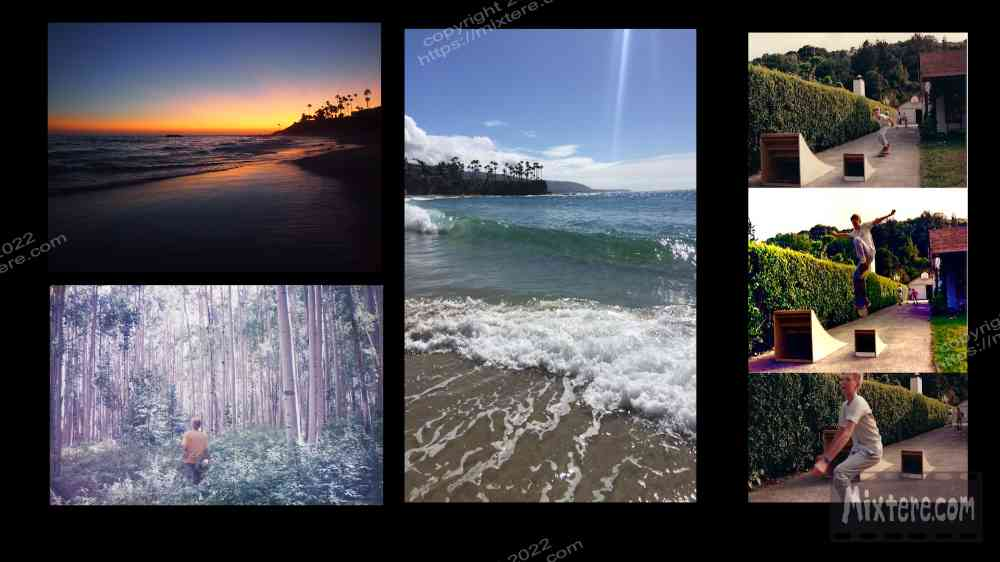
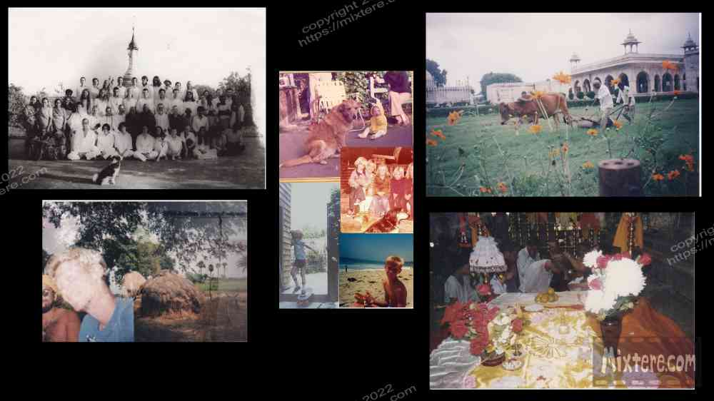
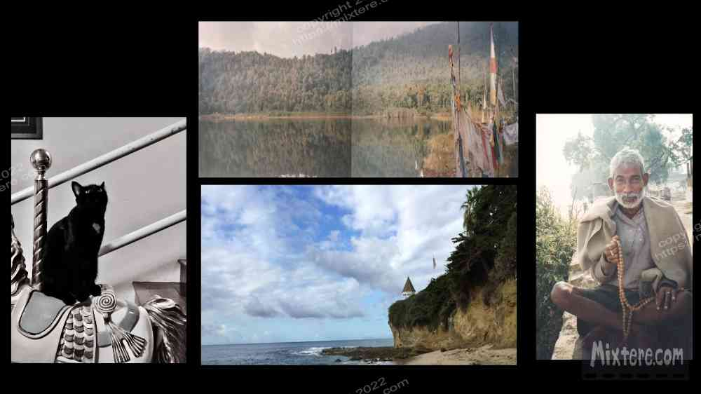

Being shouldered with the drive to ask why is no light issue to carry. Constantly seeking the extraordinary and the underlying truths in life has been a very bumpy road. I am not really interested in social presentations to help me fit in or climb the ladder or in the generation of profits. I am more drawn to create, explore and [actually] connect with people. That said, I spent my youth and early adulthood in somewhat futile efforts to fit in and do what I understood to be applauded by society. Instead of fulfilling me these endeavors cemented misery for me. This story, which is still ongoing, is about my effort to follow my heart, fulfill my soul and… hopefully find a place to call home before I die.

Since leaving my birthplace of Laguna Beach at age six I have been without a sense of home place or community. My own American culture feels alienating. This has only increased with my experiences abroad. My orientation toward exploration of truths and critical thinking has not won me over with bosses or at the water cooler. It has paired much better with India, at least the older version of that land I once knew in rural Bihar. Anyway, my asking “why” has fit well into many of the Eastern philosophical and meditative traditions. These traditions are often rooted in endeavors of relentless inquiry, observation and seeking rather than blind faith. They tap into my drive to try to see behind what is presented to discover the underlying, often obfuscated, truths about oneself as well as the rest of the world. In fact, these traditions often argue that self and “the world” are in fact one. Anyway, this “seeker” sensibility is not something I would wish on anyone.
The nagging quest for experience, wisdom and peace that accompanies it is really never-ending. That said, this “drive,” along with the lonely nights and severe uncertainty, has brought rich experience, wisdom and a world view that is much more varied and complex than that found with folk that do not seek. And with each experience and discovery I am more cemented on this unconventional path. It is likely that this was my trajectory from my very first breath so many years ago. I am sharing the main benefit of a trajectory and sensibility driven to experience a blinding array of things with an intensity much greater than what most know. I believe there are others like me who may find some comfort in reading these tales. Additionally, those cut from different cloths can peek here and be able to know these perspectives, ones they would otherwise never be aware of. I believe it all at least makes for an interesting story. I formally invite you to hear that tale.
In many ways these pages are about a stateless person’s search for a home. When I think of the word home I think of a place and time far removed from the current one- the Laguna Beach of the 1970’s. At this time Laguna was not a place of wealthy people, it was one of bohemians. It was a place of letting one’s hair down, growing it out, having ally parties, joining the food COOP, being free, experimenting with sex, drugs, carob, soy beans, chakras, etc. Plopped on the rocky coast of a land of ultra-conservative people, ranchers and orange farmers, Laguna had been a sanctuary for artists, alternative sorts and homosexuals in the first half of the twentieth century. Then the demographics rounded out to accommodate young families and a drug culture that came with those groovy times. Many icons from the sixties were around Laguna. Jimmy Hendrix, Timmothy Leary and other celebrities and counterculture icons were around.
At the dawn of the eighties my father moved the family to the San Francisco Bay area to return to his roots and to work out of the SF office of a landscape design company he and two partners created. This abrupt change was devastating to all in the family but him. The severance from our community made it difficult for my mother, sister and I to manage. In short, we spent ten long years in San Rafael and San Anselmo, across the bay from San Francisco. Then we returned to Laguna for another work reason of my Dad’s. When we did so, who and what we had known and our connection with the community were long gone. From my perspective, the culture around me and everything but the land and sea were startlingly foreign. I experienced a bizarre and puzzling lesson that somehow, despite my identifying Laguna as my home I did not belong there.
Additionally, during my time spent in Northern California, because of an aloof prejudice that persists there to this day, I had learned to hide and become ashamed of and hide the fact that I had lived in Southern California. All these things contributed to the feeling of being stateless and led me to balk at the question, “Where was I from?” The older I got, the less I knew what the answer to that question was. Anyway, somehow managing to make it through an adolescent hell of isolation, alienation, and three different high schools in three different communities, I graduated. Without knowing what else to do, I enrolled at The Colorado College in Colorado Springs. Everyone encouraged me to get my BA and insisted that it would prove to be “very valuable.” So I pressed on.
When sophomore year ended and I was required to choose a major. I chose religion. This was just the most interesting option and the one that came closest to delivering the truth that I craved. I saw the roots of religious beliefs in world history and figured if I knew the components then I would be able to understand the products of those components- human history and the greater truths in life. It also seemed, at the time, that religion involved people living their beliefs and involving their heart instead of just experimenting intellectually, as in philosophy. Well, my intentions were good but I was clearly very naive. As you might have expected, my degree in religion from The Colorado College proved to be about as useful and marketable as soggy bread, but the whole college effort included one bright light for me.
This was Antioch College's Buddhist Studies program in Bodh Gaya, Bihar. To put it simply- the experience sort of hypnotized me and haunted me ever since. As the years passed I embellished the memories and ruminated over the experiences. They would not leave my heart. I “remembered” the camaraderie among participants bonding over meditation techniques, haggling successes and hardships like grueling train rides, diarrhea or food poisoning. I missed the adventure, mystery and sense of richness that simply stepping outside of the vihar gates would bring. I missed being with like-minded people in the program, getting up at 5 am to sit, chant under the Bodhi Tree, and later eat bad Indian chocolate in large quantities. I missed our Sri Lankan Vipassana teacher Godwin....
But there was something else to the experience that I still can’t put my finger on. I think many people feel this something when visiting India. There was a magic feeling about. Walking the dusty lanes had been a time-traveling experience. What existed there was a simpler place and a simpler pace.We learned to persevere, meditate, and to simplify our lives. What was important and essential became clearer. We learned to do without countless things, such as electricity and toilet paper, that we had previously believed to be essential. There were no cell phones and only the most meager and unreliable of “internet cafes.” Corresponding with family in the states meant long delays between the movements of postcards and airmail envelopes. There were candles for when the power died. There was thick humidity and sweltering mosquito nets. There were candles for light and drying of paper from monsoon moisture. The experience of taking our letters to the post office, especially in September heat, added additional adventure to what used to be a very boring errand. There a team of seven or more employees split the task of processing us and pointing to the pot of glue for our stamps. These employees were sharing a job that required two people... and therefore remaining employed.
We learned to persevere, meditate, and to simplify our lives. What was important and essential became clearer. We had to give up ingrained concepts of what was to be expected in any life situation. Nothing materialized in linear fashion and there were no guarantees with anything. Time took on weird dimensions there. A month seemed to equate to more than a year of my normal life in the states. All around was a plethora of sensory overload; wonderful and catastrophic sights, sounds, smells, discoveries, risks, freedoms and most of all… unknowns. It’s probably impossible to put to words but it tapped into something essential in me.

Right-click below to open in new tab

Click below for next chapter